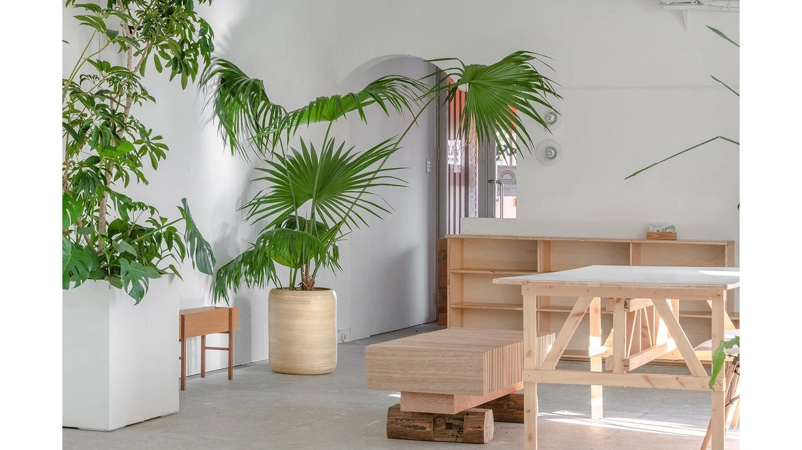
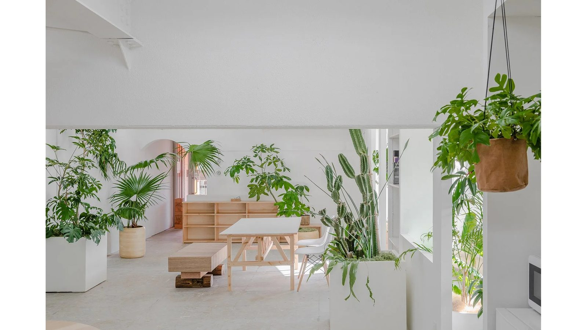
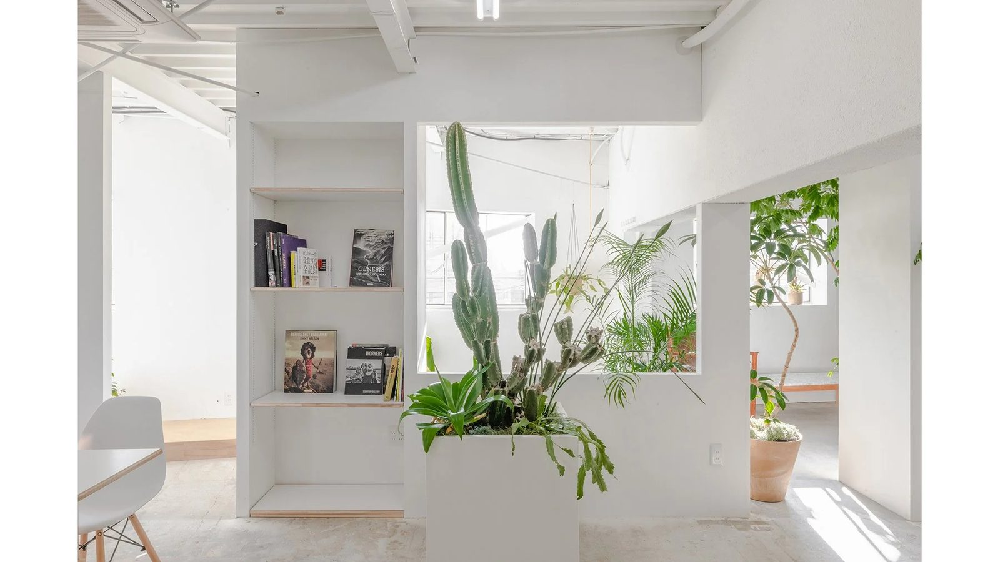
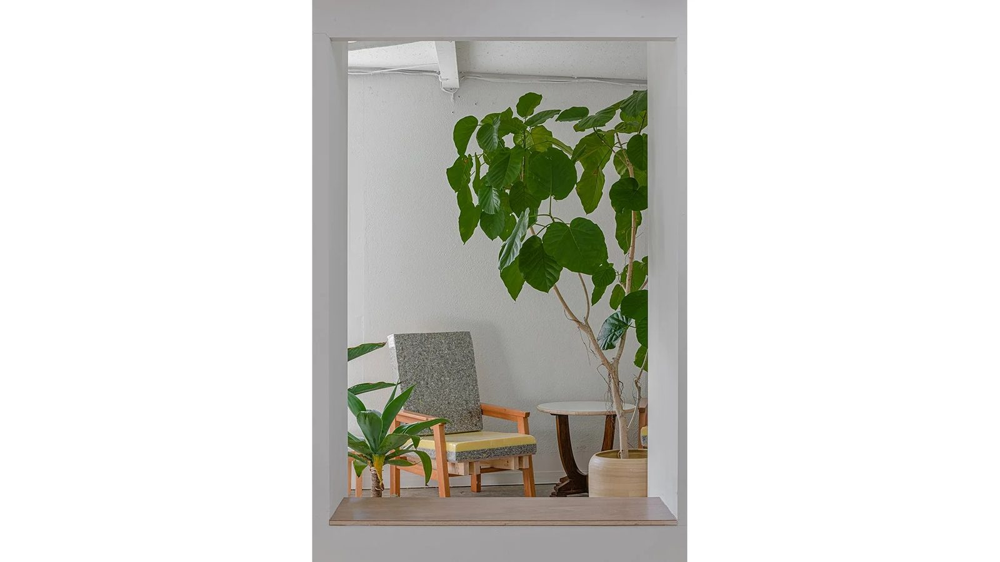
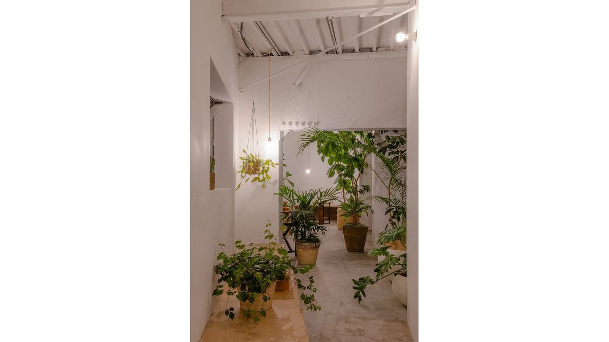
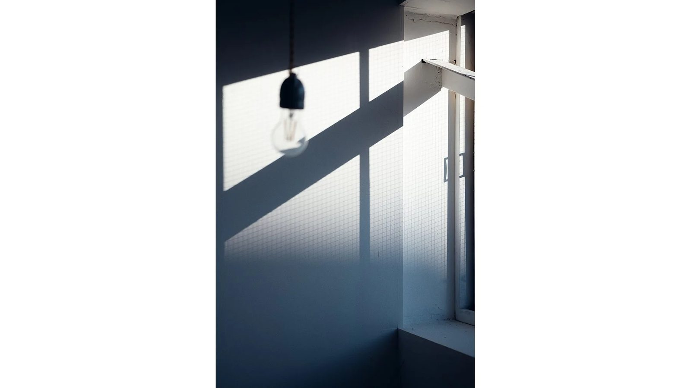
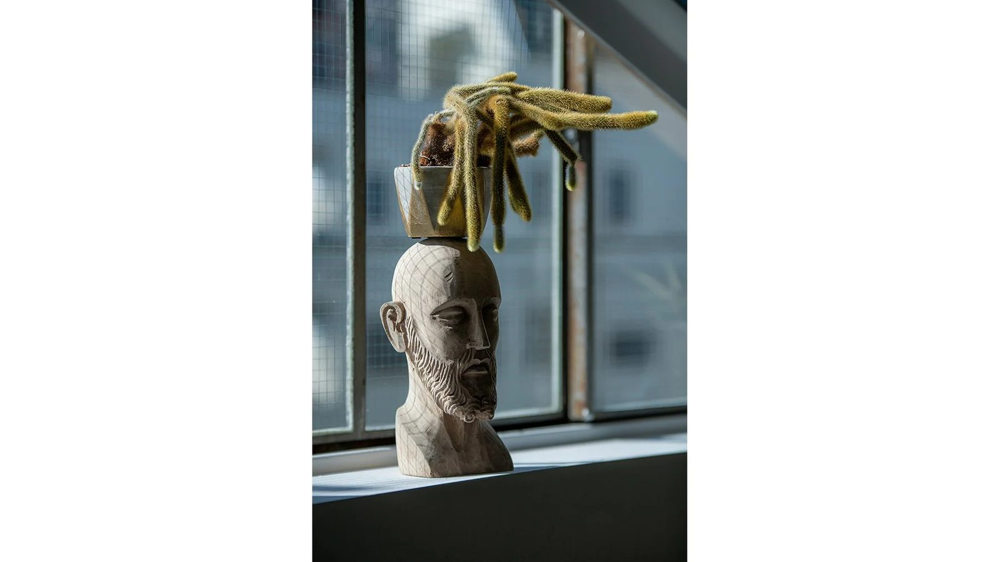
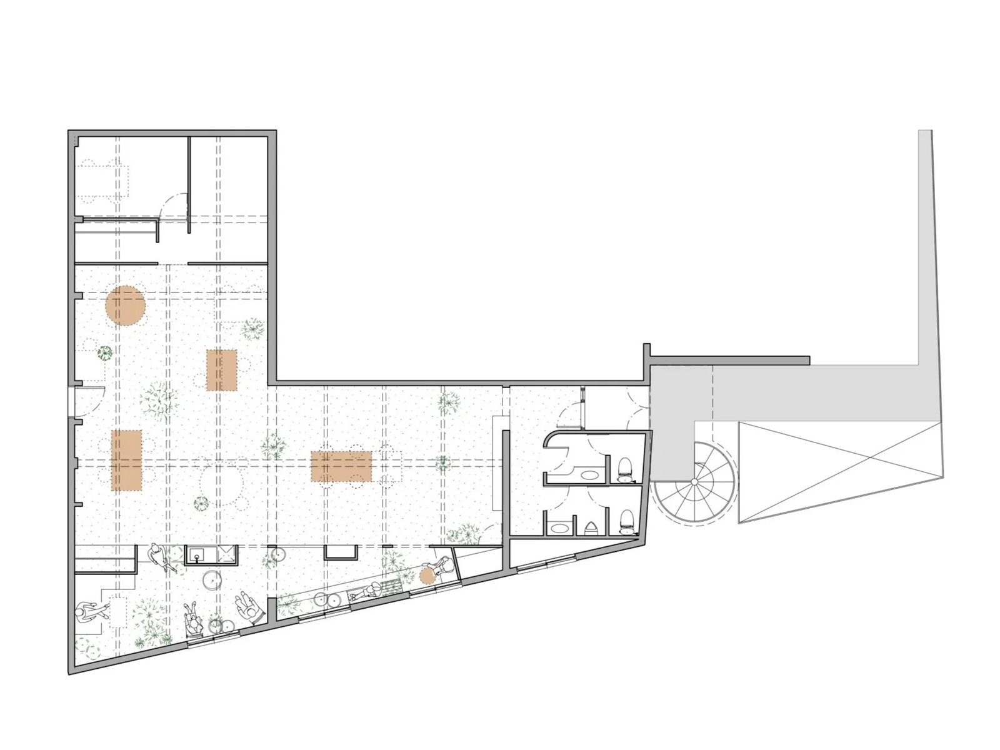

駒沢のオフィス
Office in Komazawa
2020年に携わった駒沢にあるフォトスタジオの2階をセカンドオフィスとしてリノベーションした。建物はL字形状の奥行き16mに対して、南側前面道路に面して比較的小さい開口部をもつ。1階のフォトスタジオはカフェとオフィスを併設しており、街に開いたフォトスタジオとして普段からあまりフォトスタジオに足を運ばないという人達にも、彼らの仕事がオープンとなることを目指した空間であった。そこでセカンドオフィスでは、人目を気にせずスタッフが休めるオフ空間と、多様な働き方のできるオン空間が必要とされた。
反復する外壁
居住性には、採光や通風、外の景色に触れ合う機会が不可欠だと考える。しかし、今回の建物は一面採光にたいして、16mの奥行きがあったことが課題だった。そこで、オンとオフ空間を作るために、外壁をインセットさせるようにもう1枚の壁を立てた。外壁と新たな壁に挟まれた細長い三角形の空間は、光が沢山差し込むサンルームとして、壁の厚みの変化により気積を変えながら様々な表情をもつ休憩スペースとした。また、その壁にもうけられた実際の窓よりも大きな開口は、奥まったオフィスに対して光、風、音、人、視線を感じるあらたな起点として、窓本来のもつ心地よさを屋内に引き込んだ。外壁を反復し、奥行きの深い空間の中に快適さの起点を増やすことで、生き生きと過ごせる場所を拡張した。
設計：a.d.p
施工：a.d.p
植栽 :Yard Works
所在地：東京都
延床面積：156.66m²
設計 :2021年7月
工事 :2021年8月
竣工 :2021年9月
写真：佐藤陽一








